更新日 : 2021/05/29
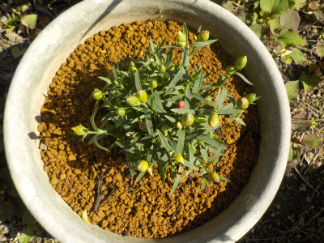
母の日が終わったせいか、ホームセンターでカーネーションが安売りしていました。
ツボミが沢山あり、これからがシーズンのものを安売りって「お得だ」って思い買いました。税込み220円でした。
でもポットの中は根っこがぎっしりしていたので、ちょっと状態は悪かったかな。
大きな鉢に植替えしました。今後の花が楽しみです。
更新日 : 2021/06/05
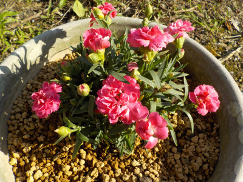
カーネーションってふわふわしたイメージがあったんですが、これはちょっと違うかな。
株が大きくなったら感じが変わるのかな？
今後の成長に期待します。
更新日 : 2021/09/26
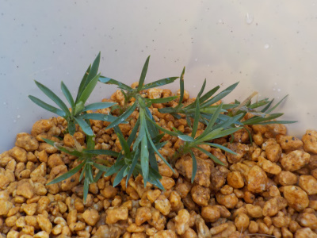
秋になったのでカーネーションの挿し芽に挑戦です。
底面給水鉢に7本挿しました。成功するかな？
更新日 : 2021/10/31
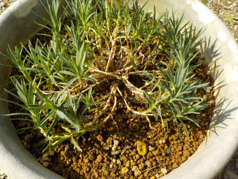
葉っぱが外側に成長したぶん、内側は茎だけになってしまいました。
骨っぽくて恰好悪い。
切り戻しをするといいのかな？でもそんなに大きくはない。とりあえず放置します。
更新日 : 2021/11/28
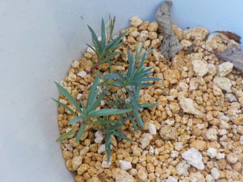
カーネーションを挿し木してから2月経ちましたが、まだ青葉のままです。
これは成功しているのかしれません。
寒い時期なので根っこの確認は春までしないつもりです。
春が楽しみです。
更新日 : 2022/03/27
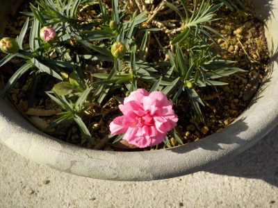
去年の5月末に買った時には花が咲いていませんでしたが、もう咲きました。
個体が大きくなったので開花が早くなったのかな。
更新日 : 2022/04/02
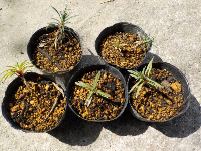
根っこがもの凄く伸びていたので、去年のうちに植え替えた方が良かったかもしれません。
根っこが絡み合ってて、だいぶ切りました。根っこが多いので、ポットよりももうちょっと大きな鉢に植えた方が良かったかもしれません。
更新日 : 2022/04/24
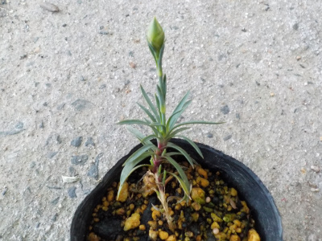
花を見るなら鉢に植え替えた方がいいけど、まだ苗が小さいからポットのまま置いておきます。
更新日 : 2022/05/08
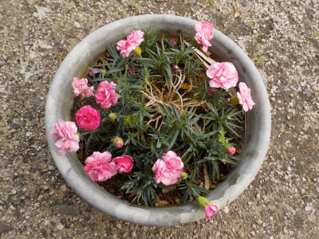
カーネーションは次々と咲いているので、まばらなのは仕方ないです。
茎が伸びすぎてるのと、鉢が大きいのを修正すれば見栄えが良くなりそうです。
3月末から花を楽しんでいるので、母の日って感じはしないです。
いつも咲いているのは有難いですが、季節感はないですね。
個人的にはパッと咲いて直ぐに散る花より、成長しながら長く咲く花の方が好きなので、このカーネーションは気にいっています。
更新日 : 2022/05/14
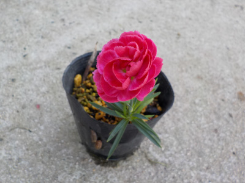
小さい茎1本に1つの花が咲いています。
コンパクトに完結してますね。サボテンみたい。
更新日 : 2022/06/04
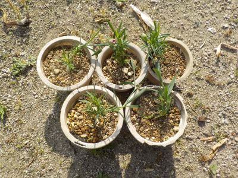
小さくて綺麗な鉢に植えたかったですが、余っている鉢がありませんでした。
ボロボロでも物を大切に使ってますよって感じが出るので、これはこれでいいかな。
次は鉢を買おうと思います。
更新日 : 2022/10/02
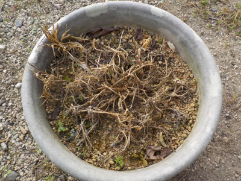
酷暑対策で日陰に置いてたら過湿のせいか枯れました。
同じ環境で育てた他の株は元気なので、原因は他にあるかもしれません。
植木鉢が大き過ぎたかな？
更新日 : 2023/01/15
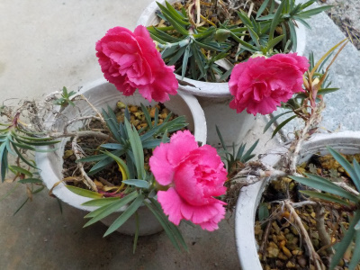
カーネーションが3つ咲きました。
まだ株が小さいのので寂しいですが、大きく育って花数が増えたら立派になりそうです。
今年は今のところ暖冬なので、たまたま咲いただけかもしれませんけど。
更新日 : 2024/05/15
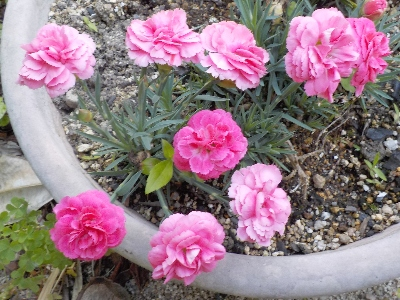
この背の低いカーネーションは今まで茎が横にはうように伸びてカッコ悪かったんですが、今回は土が合ってたみたいで茎がスッと立って花が咲きました。
この状態がキープできるといいんだけどな。
背の低いカーネーションは可愛いですよね。以前から欲しいと思っていました。
【おいしいものを食べよう。】【たくさん寝よう。】
【ソロ活をしよう!】【季節感のあることをしよう。】【動画視聴はほどほどに。】【当サイトの全てのコンテンツは無断転載禁止です。】